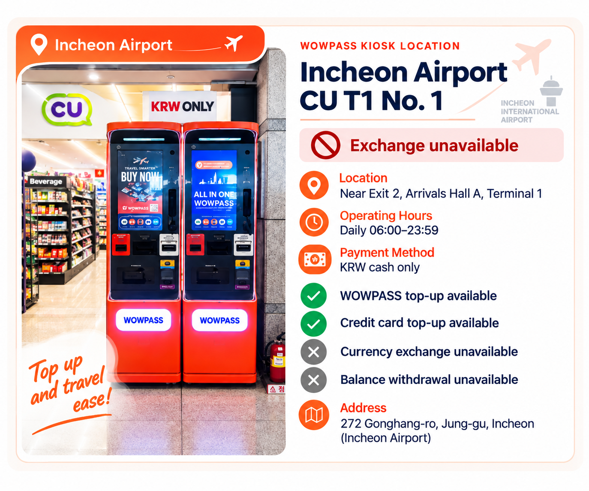
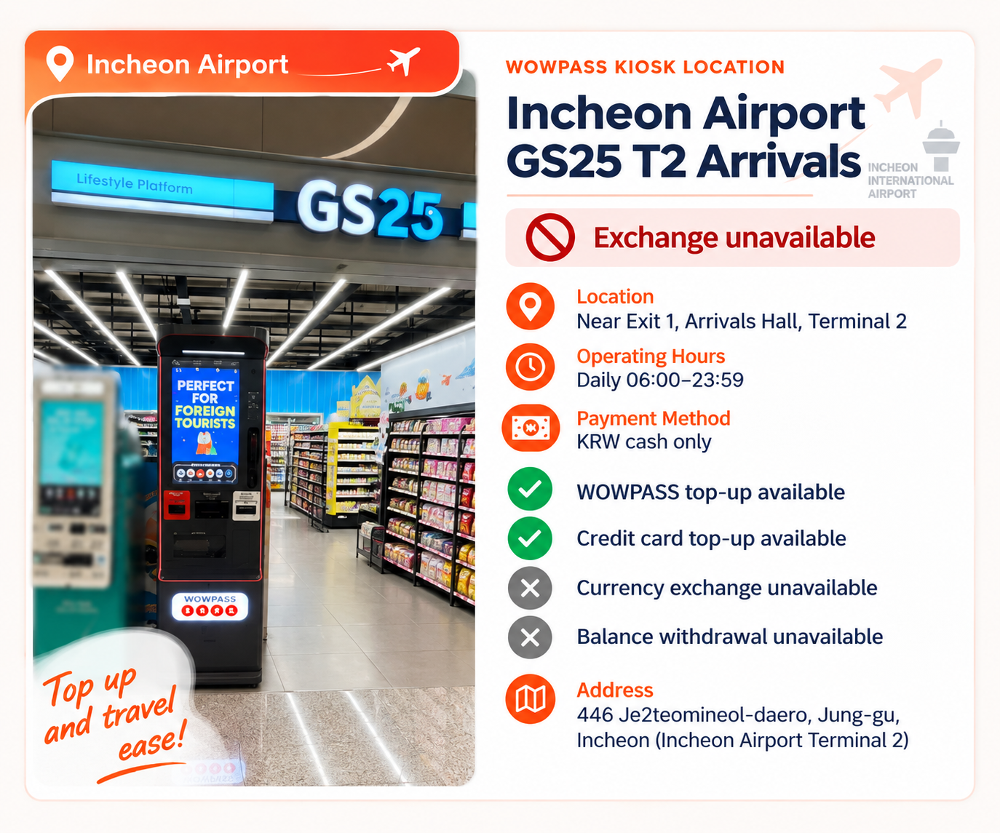
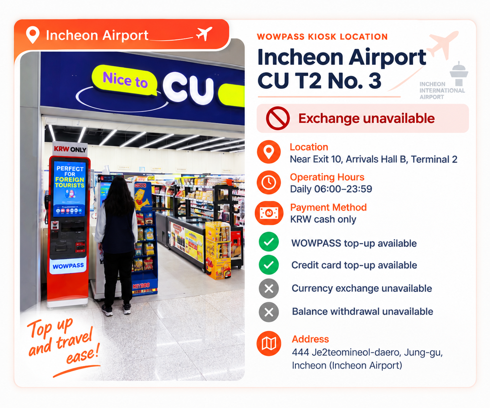

WOWPASS bisa berguna jika Anda menginginkan kartu pembayaran prabayar Korea, penukaran mata uang, dan T-money dalam satu kartu fisik. Namun, konsep “serba dalam satu kartu” bisa menyesatkan: uang untuk berbelanja dan uang untuk naik bus atau kereta bawah tanah tersimpan dalam dua saldo terpisah.
Jika hanya membutuhkan transportasi umum, kartu T-money biasa biasanya lebih sederhana. WOWPASS mulai lebih masuk akal saat Anda juga ingin saldo pembayaran Korea, pengisian dengan mata uang asing yang didukung, penarikan tunai, atau fitur pengelolaan kartu di aplikasi.
Fungsi pembayaran dan transportasi berada pada kartu fisik yang sama, tetapi saldonya terpisah.
Apa saja fungsi WOWPASS?
WOWPASS menggabungkan beberapa kebutuhan yang sering diurus secara terpisah oleh pengunjung asing di Korea.
Saldo WOWPASS berfungsi sebagai saldo pembayaran prabayar untuk pembelian biasa. Kartu ini juga memuat fungsi transportasi T-money untuk bus dan kereta bawah tanah. Uang tunai asing dapat ditukar dan dimasukkan melalui mesin WOWPASS yang mendukungnya, sedangkan aplikasi menyediakan fitur pengisian saldo tambahan dan pengelolaan kartu.
Beberapa fungsi dalam satu kartu memang menarik, tetapi juga sering membuat wisatawan salah memahami cara kerjanya.
Fungsi pembayaran dan transportasi berada pada kartu fisik yang sama, tetapi saldonya terpisah. Mengisi ₩50,000 ke saldo pembayaran WOWPASS tidak berarti Anda memiliki ₩50,000 untuk naik kereta bawah tanah. Saldo T-money perlu diisi secara terpisah.
Bagi wisatawan yang memahami perbedaan tersebut, WOWPASS cukup mudah digunakan. Bagi yang berharap satu saldo bisa membayar semuanya, pengalaman pertama di gerbang stasiun bisa mengecewakan.
Satu Kartu, Dua Saldo
Pahami bagian ini sebelum mengisi saldo kartu.
Pembelian umum menggunakan saldo prabayar WOWPASS, sedangkan transportasi menggunakan saldo T-money yang tertanam di kartu.
Saldo WOWPASS
Saldo T-money
Kegunaan utama
Toko, restoran, dan pembayaran kartu langsung lainnya
Bus, kereta bawah tanah, dan transportasi yang didukung
Cara membayar
Masukkan cip IC kartu ke terminal pembayaran
Tempelkan kartu pada alat pembaca transportasi
Cara mengisi saldo
Mesin WOWPASS atau metode pengisian melalui ponsel yang didukung
Pengisian saldo T-money secara terpisah
Apakah mengisi saldo lain juga menambah saldo ini?
Tidak
Tidak
Dukungan aplikasi
Saldo, transaksi, dan pengelolaan kartu
Pemeriksaan saldo dan dukungan pengisian melalui aplikasi saat ini
Panduan WOWPASS sendiri secara tegas membedakan kedua saldo ini. Pembelian umum menggunakan saldo prabayar WOWPASS, sedangkan transportasi menggunakan saldo T-money yang tertanam di kartu.
Pembayaran yang berhasil di toko tidak menunjukkan berapa sisa saldo T-money Anda. Sebaliknya, saldo T-money yang cukup untuk naik kereta tidak berarti saldo belanja WOWPASS juga cukup.
Jika gerbang stasiun menyatakan saldo transportasi terlalu rendah, menambahkan uang hanya ke saldo pembayaran WOWPASS tidak akan menyelesaikan masalah.
Mendapatkan Kartu WOWPASS
Di Bandara Incheon, hal terpenting adalah mengikuti lokasi persis yang tercantum pada pemesanan Anda. Beberapa minimarket di bandara memiliki kios layanan mandiri WOWPASS, jadi “pengambilan di bandara” tidak selalu berarti petugas menyerahkan kartu di kasir toko.
Per 5 Oktober 2026, halaman pemesanan resmi WOWPASS mencantumkan minimarket CU bandara untuk Terminal 1 dan Terminal 2 Bandara Incheon. Pencari kios resmi juga menunjukkan kios WOWPASS di minimarket bandara, termasuk CU dan GS25. Fungsi kios berbeda menurut lokasi; ketiga contoh di bawah mendukung pengisian saldo WOWPASS, tetapi tidak menyediakan penukaran mata uang atau penarikan saldo.
Alur pemesanan mencantumkan secara terpisah pilihan SKT Roaming Center bandara untuk paket WOWPASS + Tmoney + SIM serta pengambilan di mesin yang dipesan sebelumnya di stasiun kereta bawah tanah, hotel, minimarket, dan lokasi lainnya. Halaman resmi saat ini menampilkan ₩6,000 sebagai harga kartu standar dan ₩5,500 untuk pilihan pemesanan kartu saja dengan diskon yang tercantum. Harga, promosi, cara pengambilan, dan layanan kios dapat berubah, jadi periksa detail pemesanan terkini serta pencari kios resmi sebelum berangkat.
Setelah menerima kartu, daftarkan di aplikasi WOWPASS sebelum mengisi saldo besar. Periksa saldo mana yang Anda isi, lalu tambahkan sesuai perkiraan penggunaan. Pendaftaran di aplikasi juga penting jika kartu nantinya hilang.



Ini beberapa contoh kios WOWPASS di Bandara Incheon. Fungsi kios berbeda menurut lokasi; ketiga lokasi yang ditampilkan mendukung pengisian saldo WOWPASS, tetapi tidak menyediakan penukaran mata uang atau penarikan saldo. Periksa pencari kios resmi untuk lokasi dan layanan yang tersedia saat ini.
Mengisi Saldo dan Menukar Mata Uang Asing
Ada dua hal berbeda yang mudah tertukar: menukarkan uang tunai asing di mesin WOWPASS dan menambahkan saldo melalui aplikasi.
WOWPASS saat ini menyatakan mendukung pengisian dengan uang tunai dalam 16 mata uang. Layanan pengisian melalui ponselnya juga mencantumkan dukungan kartu internasional dan dompet digital, termasuk Mastercard, JCB, serta Visa melalui PayPal pada situs resmi saat ini.
Saat Anda menggunakan uang tunai asing yang didukung di mesin WOWPASS, layanan mengonversinya ke won Korea dan menambahkan hasilnya ke saldo pembayaran WOWPASS.
Pengisian melalui ponsel menggunakan cara berbeda. Anda tidak memasukkan uang kertas asing ke mesin, melainkan menambah saldo melalui metode pembayaran internasional yang didukung di aplikasi.
Perbedaan ini penting saat membandingkan biaya. Kurs penukaran dan biaya pengisian saldo belum tentu sama. Sebelum mengisi saldo besar, lihat jumlah KRW yang benar-benar akan Anda terima dan biaya yang ditampilkan untuk metode tersebut, alih-alih menganggap semua cara mengisi WOWPASS berbiaya sama.
Ada dua hal berbeda yang mudah tertukar: menukarkan uang tunai asing di mesin WOWPASS dan menambahkan saldo melalui aplikasi.
Membayar dengan WOWPASS
Untuk pembelian biasa, WOWPASS lebih menyerupai kartu prabayar Korea daripada kartu transportasi.
Panduan resmi menyatakan bahwa saldo pembayaran WOWPASS dapat digunakan di merchant fisik Korea yang menerima pembayaran kartu kredit atau debit domestik, termasuk beberapa tempat yang mungkin tidak menerima kartu terbitan luar negeri. Untuk pembelian tersebut, petunjuk resminya adalah memasukkan cip IC kartu ke alat pembaca kartu merchant.
Cara ini berbeda dari penggunaan di kereta bawah tanah.
Di toko, restoran, atau kafe, pembayaran diambil dari saldo WOWPASS. Di bus atau kereta bawah tanah, Anda menempelkan kartu dan menggunakan saldo T-money yang terpisah.
Ingat juga hal ini saat menggunakan kios pemesanan mandiri. Adanya simbol nirsentuh tidak berarti setiap transaksi WOWPASS harus dilakukan dengan menempelkan kartu seperti T-money.
Pemasaran WOWPASS sendiri terkadang memakai klaim penerimaan yang sangat luas. Untuk perencanaan perjalanan, lebih aman memperlakukannya sebagai kartu pembayaran prabayar Korea untuk transaksi langsung, bukan jaminan bahwa semua pembayaran daring, situs luar negeri, atau terminal pembayaran yang tidak umum akan menerimanya.
Jika pembayaran di merchant gagal, siapkan metode pembayaran lain alih-alih berulang kali memindahkan uang antar saldo.
Menarik Won Korea
WOWPASS juga dapat mengubah sebagian saldo pembayaran kembali menjadi uang tunai Korea melalui mesin WOWPASS yang mendukungnya.
Situs resmi saat ini menyebut batas penarikan ₩100,000 per transaksi dengan biaya ₩1,000 untuk setiap penarikan. Situs tersebut juga menyatakan penarikan bisa diulang. Ini ketentuan layanan saat ini dan perlu diperiksa kembali sebelum diandalkan untuk perjalanan mendatang.
Perbedaan pentingnya adalah ini penarikan saldo WOWPASS melalui sistem WOWPASS. Hal tersebut berbeda dari memiliki rekening bank Korea dengan akses tanpa batas ke ATM domestik.
Bagi wisatawan yang sesekali membutuhkan uang tunai Korea, fungsi ini bisa berguna. Namun, kurang masuk akal menganggap WOWPASS sebagai pengganti semua kebutuhan perbankan atau ATM selama tinggal lama.
T-money di Dalam WOWPASS
Fungsi transportasi yang tertanam di WOWPASS adalah T-money asli.
Panduan resmi WOWPASS menyatakan bahwa saldo T-money dapat digunakan di kereta bawah tanah dan bus Korea serta mengarahkan wisatawan untuk menempelkan kartu pada alat pembaca transportasi. Perusahaan juga saat ini mempromosikan penggunaan transportasi selain kereta dan bus, termasuk taksi yang mendukungnya.
Kata kuncinya adalah saldo.
Membawa kartu WOWPASS di dompet tidak berarti fungsi transportasinya sudah terisi. Saldo T-money sendiri harus mencukupi.
Aplikasi saat ini dapat menampilkan saldo kartu transportasi dan mendukung pengisiannya saat mulai menipis.
Bagi wisatawan yang naik kereta dan bus setiap hari, fungsi ini memudahkan karena biasanya tidak perlu kartu T-money fisik kedua. Namun, manfaatnya adalah kemudahan membawa kartu, bukan penyederhanaan saldonya: Anda tetap perlu mengingat saldo mana yang membayar bagian perjalanan tertentu.
Kegunaan Aplikasi WOWPASS dalam Praktik
Dalam penggunaan sehari-hari, aplikasi ini jauh lebih berguna daripada kesan awalnya.
Aplikasi dapat menampilkan saldo pembayaran WOWPASS dan aktivitas transaksi, serta perusahaan saat ini menyediakan notifikasi pembayaran waktu nyata melalui aplikasi. Pengguna juga bisa melihat saldo kartu transportasi yang tertanam dan mengisinya.
Fitur paling penting justru yang terlihat biasa: keamanan kartu.
Menurut WOWPASS, kartu yang hilang atau dicuri dapat dinonaktifkan sementara di aplikasi untuk melindungi saldo WOWPASS, lalu kartu pengganti dapat diterbitkan.
Ini alasan kuat untuk segera mendaftarkan kartu fisik di aplikasi setelah menerimanya, alih-alih menunggu sampai terjadi masalah.
Aplikasi juga saat ini mendukung transfer saldo antar pengguna WOWPASS. Fitur ini bisa memudahkan teman yang bepergian bersama, tetapi tetap merupakan tambahan dari fungsi utama memantau pengeluaran, mengelola kartu, dan melindungi saldo pembayaran.
Jika Kartu Hilang
Kehilangan kartu perjalanan memang merepotkan. Kehilangan kartu dengan saldo prabayar besar lebih serius.
Jika WOWPASS Anda hilang, tindakan pertama yang berguna adalah membuka aplikasi dan menonaktifkan kartu sementara. WOWPASS saat ini menyatakan bahwa langkah ini melindungi sisa saldo WOWPASS dan memungkinkan penerbitan kartu pengganti.
Jangan menganggap semua komponen kartu dapat dipulihkan dengan cara yang persis sama. WOWPASS sendiri memperlakukan saldo prabayar dan fungsi T-money secara terpisah dalam panduan penggunaannya, jadi periksa petunjuk dukungan terkini untuk saldo transportasi saat mengganti kartu yang hilang.
Ini alasan lain untuk tidak mengisi saldo jauh melebihi perkiraan penggunaan.
Sebelum Meninggalkan Korea
Di akhir perjalanan, kartu WOWPASS bisa masih memiliki uang di dua tempat: saldo pembayaran WOWPASS dan saldo transportasi T-money.
Jangan memperlakukan kedua saldo tersebut sebagai satu pengembalian saldo.
Panduan penggunaan resmi WOWPASS menyediakan fungsi terpisah untuk penarikan saldo WOWPASS dan pengembalian saldo T-money, sesuai struktur dua saldo yang berlaku selama perjalanan.
Sebelum perjalanan terakhir ke bandara, periksa kedua saldo secara terpisah.
Jika masih membutuhkan kereta bawah tanah atau transportasi bandara, sisakan saldo T-money yang cukup untuk perjalanan tersebut. Jika saldo pembayaran WOWPASS masih terlalu banyak, periksa petunjuk penarikan terkini sebelum tiba di bandara.
Jangan menundanya sampai beberapa menit terakhir sebelum keberangkatan. Tempat pengembalian saldo atau penarikan tunai mungkin tidak berada di lokasi yang Anda harapkan.
Masalah umum yang membuat WOWPASS terasa rumit
“Saya sudah mengisi WOWPASS, tetapi kereta bawah tanah menyatakan saldonya tidak cukup.”
Penjelasan yang paling mungkin adalah Anda mengisi saldo pembayaran WOWPASS, bukan saldo T-money yang tertanam. Keduanya terpisah. Lihat saldo transportasi di aplikasi dan isi saldo itu jika diperlukan.
“Pemesanan saya menunjukkan minimarket bandara. Apakah kartunya diambil di kasir?”
Jangan menganggap kartu akan diserahkan petugas di kasir. Beberapa minimarket Bandara Incheon memiliki kios layanan mandiri WOWPASS. Ikuti petunjuk persis pada pemesanan Anda dan pastikan lokasi terkini di pencari kios resmi, karena pengaturan dan fungsi yang tersedia bisa berbeda menurut lokasi.
“Saya mengira memasukkan uang tunai asing dan mengisi saldo di aplikasi adalah hal yang sama.”
Keduanya menambah saldo yang bisa digunakan, tetapi caranya berbeda. Uang tunai asing yang didukung diproses melalui penukaran di mesin; kartu internasional atau dompet digital yang didukung dapat digunakan melalui pilihan pengisian ponsel yang tersedia saat ini.
“Kartu bisa dipakai di kereta bawah tanah, tetapi pembayaran di toko gagal.”
Kereta bawah tanah menggunakan fungsi T-money. Toko menggunakan fungsi prabayar WOWPASS. Periksa saldo yang benar terlebih dahulu. Jika saldo cukup dan merchant tetap tidak dapat memproses kartu, gunakan metode pembayaran lain, alih-alih menganggap keberhasilan transaksi transportasi menjamin semua pembayaran toko juga berhasil.
“Saya menempelkan kartu di toko, tetapi tidak terjadi apa-apa.”
Untuk pembelian WOWPASS biasa, petunjuk resminya adalah memasukkan cip IC ke alat pembaca kartu. Menempelkan kartu merupakan cara penggunaan untuk transportasi.
“Kartu saya hilang.”
Nonaktifkan sementara di aplikasi sesegera mungkin. WOWPASS saat ini mendukung penonaktifan dan penggantian kartu untuk melindungi saldo WOWPASS. Setelah itu, ikuti proses dukungan terkini untuk penggantian dan periksa perlakuan terhadap saldo T-money yang terpisah.
“Saya meninggalkan Korea dengan uang masih tersisa di kedua saldo.”
Urus keduanya secara terpisah. Saldo pembayaran WOWPASS memiliki proses penarikan sendiri, sedangkan T-money memiliki proses pengembalian saldo sendiri. Periksa keduanya sebelum perjalanan terakhir ke bandara.
Wisatawan yang Terbantu oleh WOWPASS
WOWPASS paling berguna saat beberapa kebutuhan muncul bersamaan.
Wisatawan yang akan menggunakan transportasi umum, ingin kartu prabayar Korea untuk pembelian sehari-hari, dan juga ingin cara mudah menukar uang tunai asing yang didukung atau mengisi saldo melalui aplikasi dapat merasakan manfaat nyata dari satu kartu fisik, dibandingkan mengurus setiap kebutuhan secara terpisah.
Kartu ini juga bisa sesuai bagi wisatawan yang lebih suka menetapkan anggaran perjalanan pada saldo prabayar daripada memakai kartu kredit utama dari luar negeri untuk setiap pembelian kecil.
Manfaatnya jauh berkurang jika kartu luar negeri Anda sudah dapat diandalkan di Korea dan Anda hanya membutuhkan kartu transportasi. Dalam situasi itu, menambahkan WOWPASS berarti aplikasi, saldo, dan sistem kartu tambahan yang perlu dipahami.
Pengunjung Seoul selama tiga hari yang hanya membutuhkan kereta bawah tanah tidak otomatis diuntungkan oleh lebih banyak fitur.
WOWPASS atau Kartu T-money Biasa?
Kartu T-money biasa menjalankan satu fungsi penting dengan sedikit persiapan: transportasi.
WOWPASS menyertakan T-money dalam produk pembayaran yang lebih luas. Hal ini bisa mengurangi kebutuhan membawa kartu pembayaran dan transportasi terpisah, tetapi manfaatnya paling terasa jika Anda juga berniat menggunakan fungsi pembayaran, penukaran, penarikan, atau pengelolaan melalui aplikasi.
Jika Anda masih memilih antara kedua kartu itu, lihat panduan T-money vs WOWPASS untuk perbandingan lengkap, alih-alih mengulang perbandingan yang sama di sini.
Bagi wisatawan yang sudah tahu hanya membutuhkan transportasi umum: Panduan T-money
Pertanyaan Umum tentang WOWPASS
Apakah WOWPASS sama dengan T-money?
Tidak. WOWPASS adalah kartu pembayaran prabayar untuk pengunjung asing yang juga memuat fungsi transportasi T-money. Saldo pembayaran WOWPASS dan saldo T-money terpisah.
Bisakah saya menggunakan WOWPASS di bus dan kereta bawah tanah?
Ya. Fungsi T-money yang tertanam dapat digunakan untuk transportasi umum Korea, tetapi saldo T-money harus diisi secara terpisah dari saldo pembayaran WOWPASS.
Apakah saya perlu kartu T-money lain jika sudah memiliki WOWPASS?
Biasanya tidak untuk penggunaan bus dan kereta bawah tanah biasa. WOWPASS sudah memuat fungsi transportasi T-money. Kartu T-money terpisah mungkin tetap lebih sederhana jika transportasi adalah satu-satunya fitur yang Anda butuhkan.
Bisakah uang yang saya isi ke WOWPASS digunakan untuk kereta bawah tanah?
Tidak secara otomatis. Uang di saldo pembayaran WOWPASS dan saldo T-money terpisah. Periksa saldo transportasi sebelum mengandalkan kartu untuk perjalanan.
Bisakah WOWPASS digunakan di toko dan restoran?
Panduan resmi menyatakan bahwa saldo pembayaran WOWPASS dapat digunakan di merchant fisik Korea yang menerima pembayaran kartu kredit atau debit domestik. Pembayaran biasa dilakukan dengan memasukkan cip IC kartu.
Bisakah WOWPASS digunakan untuk belanja daring?
Jangan menganggap pembayaran langsung dengan WOWPASS otomatis berarti pembayaran daring Korea akan menerimanya. Panduan penggunaan resmi secara khusus menjelaskan pembayaran di merchant fisik. Untuk kendala pembayaran daring Korea, lihat panduan pembayaran daring Korea Inside yang terpisah.
Bisakah saya menukarkan uang tunai asing dengan WOWPASS?
WOWPASS saat ini mendukung pengisian dengan uang tunai dalam 16 mata uang melalui layanannya, sesuai aturan mesin dan mata uang yang berlaku. Periksa jumlah hasil penukaran sebelum mengonfirmasi transaksi.
Bisakah saya mengisi saldo WOWPASS dengan kartu terbitan luar negeri?
WOWPASS saat ini menyatakan mendukung pengisian melalui ponsel menggunakan kartu internasional dan dompet digital, dengan Mastercard, JCB, serta Visa melalui PayPal yang ditampilkan di situs resminya. Periksa ketersediaan dan biaya terkini di aplikasi sebelum mengisi saldo besar.
Bisakah saya mendapatkan WOWPASS di Bandara Incheon?
Ya. Halaman pemesanan resmi saat ini mencantumkan minimarket CU bandara untuk Terminal 1 dan Terminal 2, dan pencari kios resmi menunjukkan kios WOWPASS di minimarket bandara seperti CU dan GS25. Paket WOWPASS + Tmoney + SIM di SKT Roaming Center bandara juga dicantumkan secara terpisah. Periksa pemesanan dan pencari kios terkini untuk lokasi persis, cara pengambilan, dan fungsi yang tersedia.
Berapa harga kartu WOWPASS?
Pada peninjauan 5 Oktober 2026 ini, halaman pemesanan resmi menampilkan ₩6,000 sebagai harga kartu standar dan ₩5,500 untuk pilihan pemesanan kartu saja dengan diskon yang tercantum. Harga dan promosi dapat berubah.
Bisakah saya menarik uang tunai Korea dari WOWPASS?
Ya. Situs resmi saat ini menyatakan bahwa mesin WOWPASS mendukung penarikan KRW dari saldo kartu, saat ini hingga ₩100,000 per penarikan dengan biaya ₩1,000. Periksa lagi aturan terkini sebelum perjalanan karena ketentuan layanan dapat berubah.
Apa yang harus dilakukan jika kartu hilang?
Jika kartu terdaftar di aplikasi, WOWPASS saat ini memungkinkan penonaktifan sementara untuk melindungi saldo WOWPASS dan menyediakan proses penggantian kartu. Periksa perlakuan terhadap saldo T-money yang terpisah melalui petunjuk dukungan terkini.
Apakah WOWPASS bermanfaat untuk perjalanan singkat?
Bisa, tetapi durasi perjalanan tidak sepenting rencana pembayaran Anda. Jika menginginkan fungsi pembayaran, transportasi, dan penukaran sekaligus, kartu ini bisa berguna meski perjalanannya singkat. Jika hanya membutuhkan bus dan kereta bawah tanah, kartu T-money biasa lebih sederhana.
Kurs, biaya, lokasi pengambilan, metode pengisian yang didukung, dan aturan layanan dapat berubah. Untuk urusan uang atau mesin tertentu, utamakan aplikasi WOWPASS atau situs resmi terkini daripada tangkapan layar atau tulisan perjalanan yang lebih lama.